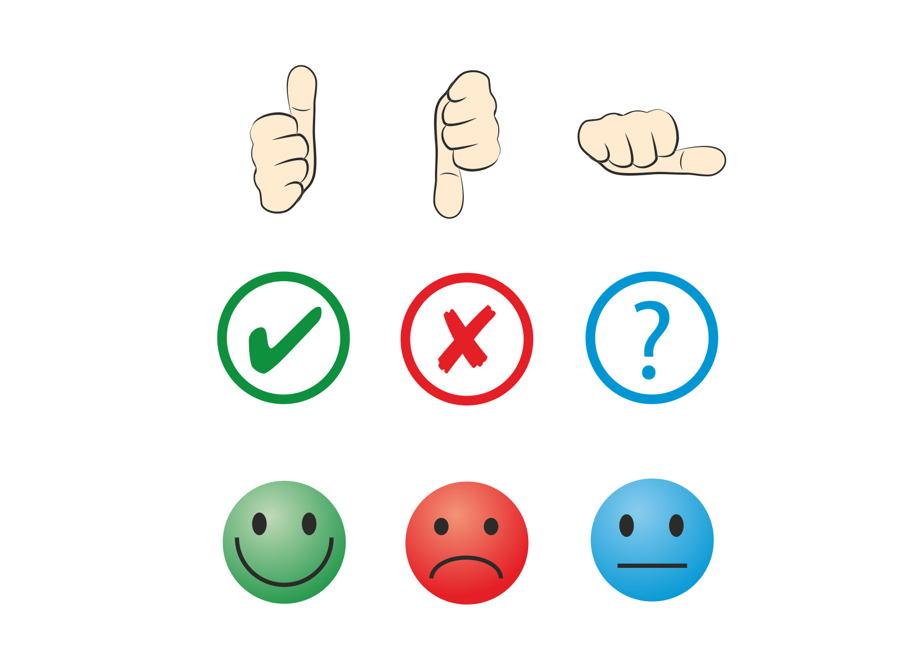

¿Qué vamos a evaluar en este proyecto? ¿Cómo lo vamos a evaluar?

La evaluación de este proyecto se aborda desde una doble perspectiva:
- Formativa: Orientada a monitorizar y valorar el proceso de aprendizaje de manera continua y permanente durante todo el desarrollo de las actividades.
- Sumativa: Dirigida a comprobar el grado de consecución de los objetivos pedagógicos reflejados en el producto final.
Este proyecto de coeducación se centra en la investigación y posterior exposición, por parte del alumnado, de diversas temáticas vinculadas a la igualdad de género.
La propuesta culminará al finalizar la unidad con la entrega de un producto final. El diseño del proyecto promueve el aprendizaje colaborativo, para lo cual el grupo-clase se estructurará en equipos de dos estudiantes cada uno.
El desarrollo del proyecto se distribuye en varias sesiones y requiere el compromiso del trabajo autónomo del alumnado.
Las sesiones de trabajo se distribuyen de la siguiente manera:
- Sesiones de investigación (en el aula): Dos clases de dos horas y quince minutos cada una, destinadas a la búsqueda, selección y mediación de la información.
- Sesiones de exposición (en el aula): Dos clases reservadas para las presentaciones orales de las parejas y la posterior dinamización de un debate.
- Trabajo autónomo (fuera del aula)
Cada estudiante debe implicarse de manera individual y coordinada para profundizar en la investigación del tema asignado mediante la búsqueda de material complementario.
El alumnado deberá crear, diseñar y publicar un producto final en un muro digital colaborativo (Padlet).
Para valorar de manera integral el proceso de aprendizaje del alumnado, se emplearán los siguientes recursos:
- Por un lado, se empleará una ficha de reflexión en formato de breve cuestionario, que se distribuirá al finalizar las exposiciones y el debate. Este instrumento permitirá evaluar el grado de satisfacción del alumnado con el trabajo realizado, potenciar sus habilidades, detectar posibles áreas de mejora y promover la autorreflexión sobre el desarrollo de sus competencias clave para futuros proyectos.
- Asimismo, el proceso incluye una rúbrica de evaluación que se facilitará al alumnado tras la exposición oral para medir el grado de consecución de los objetivos de la tarea final. Dicha rúbrica evaluará específicamente los componentes lingüísticos y estratégicos de la competencia comunicativa oral, analizando el uso de las funciones comunicativas, la pronunciación, la entonación, la organización del discurso y la riqueza y corrección gramatical y léxica.
.jpg)